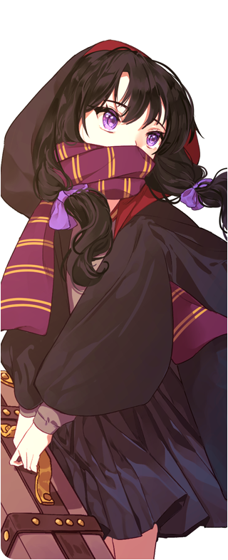
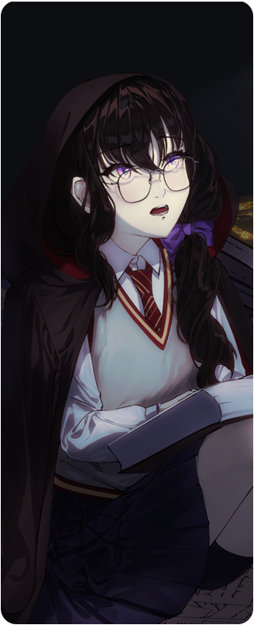
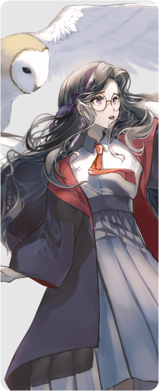
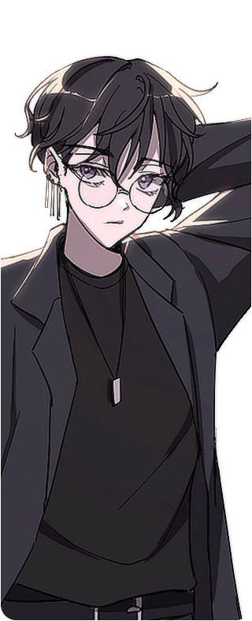
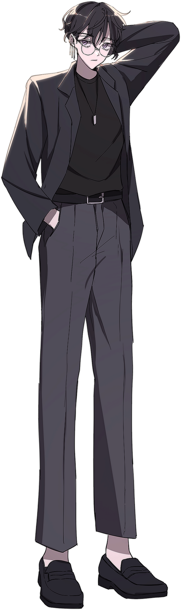

Sonya Crichton
소냐 크라이튼




[ Exodus ]
“ 그 착각을 깨줄게. ”
나이
25세
기숙사
그리핀도르
“한 마디만 하마. 네가 누구 딸인지 알겠다.”
진영
불사조 기사단
직업
무명배우
국적
파키스탄계 영국인
혈통
혼혈
키/무게
178cm/61kg
성별
시스젠더 여성
지팡이
잎갈나무/용의 심/13인치/놀라울 만큼 휙 소리가 남
성격
# 한결 같은 플롯
성격적 변화가 크지 않으니 그것이 소냐 크라이튼이라는 인물의 ‘인생사’를 관통하는 주제가 되겠다. 그녀는 언제나 한결 같다. 파도 같은 격정에 자주 휩쓸리지 않고 암초처럼 서서 시대를 바라보고 인간을 관찰한다. 타인은 자주 그녀를 시선의 올가미에 엮고자 하지만, 그녀는 편견 속에서도 자유롭다. 하고 싶은 일을 하고, 해야 하는 일을 그 다음으로 생각한다. 하고 싶지 않은 일에 좀처럼 얽매이지 않는다.
# 자유로운 주제
사실 속박당하기에 말없이 제멋대로였으니 그냥 ‘소냐가 소냐로 자랐다’고 밖엔 표현할 길이 없겠다. 타인이 자신을 어떻게 보는지에 관해 골몰하지 않고 눈치를 살피지 않는다. 그들은 소냐에게 어떤 의미로든 찰나인 까닭이다. 가장 먼저 자신에게 충실하고 그 다음으로 타인을 들인다. 스스로에게 여유가 없으면 타인을 사랑할 수도 없다는 것이 그녀의 지론이다. 독립적인 인간이다. 외로움에 사람을 갈구하지 않는다. 도리어 타인이 매달리기 시작하면 피곤해한다. 드라이하단 평가를 받기도 하는데, 소냐는 그것을 반박하지 못했다.
# 소시민적 인물
영웅적이지도 않고 어디 가서 눈에 띌 사람도 아니다. 그녀는 기본적으로 야망이 크지 않고 소시민적이다. 직업이 배우라지만 배우로 대성하고 싶다기 보다는 스스로를 수양하는 직업으로서 배우가 가장 괜찮았던 것뿐이다. 적당한 거리감을 유지하며 무대를 배회하는 조연, 소냐 크라이튼에게 가장 합당한 비평이겠다.
기타
● 카디프 출신이나 현 시점 공연을 런던에서 하고 있기 때문에 런던에서 혼자 살고 있다. 현재 출연하고 있는 작품은<안티고네>.
● 호그와트 졸업 후 아버지가 근무했던 극단에서 이런저런 잡무를 도맡아 일했다. 처음엔 거의 스태프 일이었지만, 차츰 단역에서 조연까지 무대에 등장하는 횟수가 늘었다. 그렇다고 해도 어디까지나 무대 위에서도 주변인 역할이고 제대로 주연을 한 적은 2년 전에 상연한 <오레스테이아>에서 연기한 오레스테스 역할이 유일하다. 키도 큰 편이고 목소리가 낮아 가끔 그런 식으로 소년이나 젊은 청년 역할을 맡기도 하는 모양이다.
● 별로 유명한 배우는 아니다. 영국에서 배우로 대성할 수 있는 출신 성분을 지닌 것은 아니라 연기를 잘하거나 못하거나의 문제는 아니다. 다만 소극장 연극을 좋아하는 사람 중에는 가끔 소냐의 연기를 눈여겨 보는 관객들이 있다. 신문에 나오고 텔레비전에 나오는 수준의 사람은 아니다.
● 아버지 매튜 크라이튼이 희곡 작가였고, 어머니 사피아 크라이튼이 파키스탄에서 이민을 온 이민자 가정 출신이다. 외조부가 파키스탄 사람이었으며 아버지를 일찍 여의었기 때문에 특히 무슬림 전통에 익숙하도록 교육받았다. 소냐 본인도 무슬림이고, 평소 사복으로 히잡을 갖추는 경우가 존재한다. (그에게 히잡은 종교적 신념을 드러내는 사복 아이템 정도의 의미를 가진다.)
○ 현 시점 어머니도 돌아가신 상태다. 지병이 악화되어 사별했다. 이 과정에서 소냐가 임종을 지키지 못했다.
○ 어머니 사피아 크라이튼이 딸에게 들이는 집착이 가히 어마어마했다. 성적 관리부터 생활 통제에 이르기까지, 만약 소냐가 아들이었더라면 요구하지 않았을 완벽함을 극성스럽게 요구하던 가여운 어머니. 소냐는 그녀를 사랑하고자 노력했지만, 자기연민에 빠진 그녀는 소냐를 사랑하지 않았다. 끝까지.
● 최근에 새로 들인 취미는 퀴디치 관람과 직장 동료들과 (살기 위한) 운동 삼아 시작한 컬링. 푸들미어 유나이티드를 응원하고 있지만, 열성적인 수준은 아니다. 컬링은 진짜 동네 동호회 수준으로 한다. 가끔 “어릴 땐 빗자루 타고 날아다녔는데 이젠 빗자루로 빙판을 닦고 있다”는 농담을 속으로만 생각한다. (직장 동료들에게 마법사란 걸 밝히진 못했다.)
● 20살이 되던 해 어머니가 돌아가셨다. 소냐는 그때까지 어머니로부터 답신을 단 한 통도 받지 못했고, 그녀가 유일하게 어머니로부터 돌려받은 답장이 다름 아닌 부고였다. 장례식을 치렀고, 유품을 정리했다. 그때에야 어머니의 방에 처음 입성했는데, 그 광경에 소냐는 말을 잃었다. 움직이는 사진부터 움직이지 않는 사진까지, 아버지가 그린 그림노트를 해체한 수많은 낱장이 벽지의 무늬를 뒤덮고 있었다. 소냐는 어머니가 자신의 무정함 때문에 고독사 했음을 인정해야 했다. 그 직후 몇 년이 힘들었다. 어머니의 진정한 사인이 무엇인가부터 시작하여, 왜 죽은 자는 산 자를 놓아주지 않는가 따위의 상념이 시시때때로 소냐 크라이튼을 덮쳤다. 도리어 그래서 일에 몰두했던 시절이다. 할일이 없으면 사색에 삼켜질 것 같았다.불사조 기사단이 재발족 되었을 무렵 일하던 소극장 앞에서 쓰러진 사람을 하나 구조했다. 극단 사람들은 ‘요즘 세상에 터무니없는 일’이라며 기묘해했으나 소냐는 그녀가 손에 지팡이를 쥐고 있었던 까닭에 마법사 사회에서 왔음을 어렵지 않게 알 수 있었다. 그녀의 이름은 ‘포스터 양’으로, 초창기 불사조 기사단의 재발족 소식을 듣고 카메라를 들고 마법부며 머글 사회를 오가던 군소 잡지의 소위 ‘열혈 기자’였다. 소냐보다는 몇 살 아래였지만, 그녀가 습격당하여 쓰러져 있었던 것만 봐도 소냐는 마법사 사회에 범상치 않은 일이 일어나고 있음을 알 것 같았다. 어머니가 돌아가신 이래 마법사 사회의 소식을 거의 듣지 못하고 있었던지라 포스터 양의 상처가 회복될 때까지 그녀로부터 이런저런 소식을 들었다. 후에 이 열혈 기자 아가씨는 자연스럽게 불사조 기사단에 발을 들였고, 어쩌다 보니 말괄량이 포스터 양과 친분이 생긴 바람에, 혹은 마법사 사회에 아직 살고 있을 호그와트 시절 친구들은 무사한지 소식을 알고 싶은 마음에 소냐도 얼떨결에 이 거대한 시대에 말려든다. 불사조 기사단에서 주로 했던 일은 서신을 전달하는 일이다. 무명이라지만 기본적으로 소냐는 배우고, 행색과 몸가짐부터 시작해 다양한 말투를 구사할 줄 알았으므로 어디에든 손쉽게 잠입했고 불사조 기사단원의 사이를 연결하고 다녔다. 그녀의 암호명은 깜찍하게도 <참새>였는데, 어디선가 “참새가 떴다”는 말을 들은 적이 있다면 소냐가 편지를 전달하러 온 모습을 목격했을 수도 있겠다. (그때마다 번번이 복장이 많이 달랐다.)
● 보기 드물게 사건의 심층부에 모습을 드러낸 이유도 소시민답게 ‘형편없을 만큼 맥이 빠지는데’, 친구인 열혈 기자 포스터 양이 최근에 또 습격을 받고 부상을 입었기 때문이다. 쉽게 말해 친구 대신 머릿수 채워주러 왔다. 입원한 포스터 양에게서 속성으로 졸업 후 다 잊어버렸던 어둠의 마법 방어술 주문 몇 가지도 배우고 외웠다. (“아무튼 스투페파이를 날리라고요!”) 덕분에 할 줄 아는 공격 주문이 스투페파이, 봄바르다, 인센디오 세 가지뿐이다. (“졸업 후에도 교과서를 읽었어야 했는데!”)
● 마법사 사회에 커다란 유감까지도 없고, 머글 사회에 특별한 증오를 느끼지도 않는다. 어머니의 임종을 지키지 못했던 사건 때문에 많은 상념에 빠졌지만, 그렇다고 어머니를 끝까지 부양했어야 했다고 시달리지는 않는다. 다만 어쨌든 자신은 사피아 크라이튼의 딸이었고 그렇다는 사실이 무산되는 날은 오지 않을 테니까, 자신의 안에 잠복하고 있을 수밖에 없는 머글 어머니를 긍정하고 싶다는 무의식에서 불사조 기사단에 손쉽게 이끌렸다. 보기보다 자기중심적이다, 아니, 어쩌면 가장 에고가 강한 인물이다.
